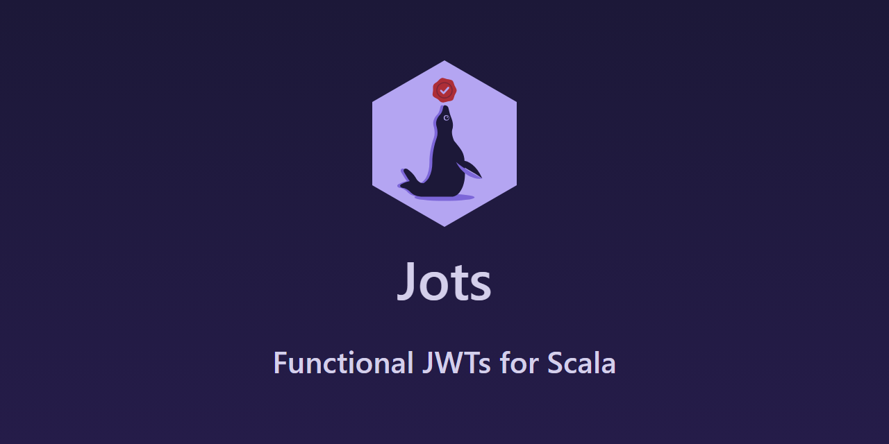

This post originally appeared on the Typelevel Blog and is reproduced here verbatim. I'll be doing a live coding introduction to the Jots library at the next Typelevel Virtual Meetup on Friday November 20th. See the Discord announcement for details. You can join the Typelevel Discord with this invite.
I am happy to announce that my library Jots has been accepted as a Typelevel affiliate project.

Jots is a library for working with JSON Web Tokens (JWTs) in Scala, Scala.js and Scala Native.
AuthMiddleware verification and periodically refreshing JWK Sets.
Token signing and verification are built on an independent
jots-crypto
module.
Crypto[F] capability for effect types with a Sync instance, like
IO and SyncIO.
String interpolator for public keys, which are validated at compile time.The module can be used on its own when you need cross-platform cryptography.
The
jots-testing
module helps with writing tests for code using the library.
Arbitrary instances for tokens, keys, JWKs and more.String interpolators for private keys, secret keys and tokens, validated at compile time.
For more information and how to get started, head over to the project website.